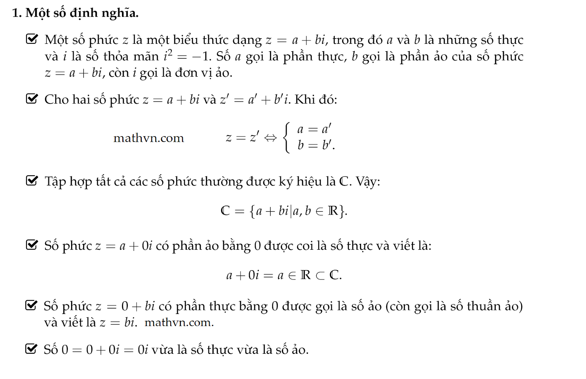

1. Phân nhóm dựa trên phương thức học
Theo phương thức học, các thuật toán Machine Learning thường được chia làm 4 nhóm: Supervised learning, Unsupervised learning, Semi-supervised learning và Reinforcement learning. Có một số cách phân nhóm không có Semi-supervised learning hoặc Reinforcement learning.
Supervised Learning (Học có giám sát)
Supervised learning là thuật toán dự đoán đầu ra (outcome) của một dữ liệu mới (new input) dựa trên các cặp (input, outcome) đã biết từ trước. Cặp dữ liệu này còn được gọi là (data, label) , tức (dữ liệu, nhãn). Supervised learning là nhóm phổ biến nhất trong các thuật toán Machine Learning.
Một cách toán học, Supervised learning là khi chúng ra có một tập hợp biến đầu vào 𝒳 ={x1,x2,…,xN} và một tập hợp nhãn tương ứng 𝒴 ={y1y2,…,yN}, trong đó xi,yi là các vector. Các cặp dữ liệu biết trước (xi,yi) ∈ 𝒳 × 𝒴 được gọi là tập training data (dữ liệu huấn luyện). Từ tập training data này, chúng ta cần tạo ra một hàm số ánh xạ mỗi phần tử từ tập 𝒳 sang một phần tử (xấp xỉ) tương ứng của tập 𝒴:
Mục đích là xấp xỉ hàm số f thật tốt để khi có một dữ liệu x mới, chúng ta có thể tính được nhãn tương ứng của nó 𝑦 = 𝑓(𝑥) .
Ví dụ 1: Trong nhận dạng chữ viết tay, ta có ảnh của hàng nghìn ví dụ của mỗi chữ số được viết bởi nhiều người khác nhau. Chúng ta đưa các bức ảnh này vào trong một thuật toán và chỉ cho nó biết mỗi bức ảnh tương ứng với chữ số nào. Sau khi thuật toán tạo ra một mô hình, tức một hàm số mà đầu vào là một bức ảnh và đầu ra là một chữ số, khi nhận được một bức ảnh mới mà mô hình chưa nhìn thấy bao giờ, nó sẽ dự đoán bức ảnh đó chứa chữ số nào.

Ví dụ này khá giống với cách học của con người khi còn nhỏ. Ta đưa bảng chữ cái cho một đứa trẻ và chỉ cho chúng đây là chữ A, đây là chữ B. Sau một vài lần được dạy thì trẻ có thể nhận biết được đâu là chữ A, đâu là chữ B trong một cuốn sách mà chúng chưa nhìn thấy bao giờ.
Ví dụ 2: Thuật toán dò các khuôn mặt trong một bức ảnh đã được phát triển từ rất lâu. Thời gian đầu, facebook sử dụng thuật toán này để chỉ ra các khuôn mặt trong một bức ảnh và yêu cầu người dùng tag friends - tức gán nhãn cho mỗi khuôn mặt. Số lượng cặp dữ liệu (khuôn mặt, tên người) càng lớn, độ chính xác ở những lần tự động tag tiếp theo sẽ càng lớn.
Ví dụ 3: Bản thân thuật toán dò tìm các khuôn mặt trong 1 bức ảnh cũng là một thuật toán Supervised learning với training data (dữ liệu học) là hàng ngàn cặp (ảnh, mặt người) và (ảnh, không phải mặt người) được đưa vào. Chú ý là dữ liệu này chỉ phân biệt mặt người và không phải mặt người mà không phân biệt khuôn mặt của những người khác nhau.
Thuật toán supervised learning còn được tiếp tục chia nhỏ ra thành hai loại chính:
Classification (Phân loại)
Một bài toán được gọi là classification nếu các label của input data được chia thành một số hữu hạn nhóm. Ví dụ: Gmail xác định xem một email có phải là spam hay không; các hãng tín dụng xác định xem một khách hàng có khả năng thanh toán nợ hay không. Ba ví dụ phía trên được chia vào loại này.
Regression (Hồi quy)
(tiếng Việt dịch là Hồi quy, tôi không thích cách dịch này vì bản thân không hiểu nó nghĩa là gì)
Nếu lable không được chia thành các nhóm mà là một giá trị thực cụ thể. Ví dụ: một căn nhà rộng x m2, có y phòng ngủ và cách trung tâm thành phố z km sẽ có giá là bao nhiêu?
Gần đây Microsoft có một ứng dụng dự đoán giới tính và tuổi dựa trên khuôn mặt. Phần dự đoán giới tính có thể coi là thuật toán Classification, phần dự đoán tuổi có thể coi là thuật toán Regression.
Chú ý rằng phần dự đoán tuổi cũng có thể coi là Classification nếu ta coi tuổi là một số nguyên dương không lớn hơn 150, chúng ta sẽ có 150 class (lớp) khác nhau.
Unsupervised Learning (Học không giám sát)
Trong thuật toán này, chúng ta không biết được outcome hay nhãn mà chỉ có dữ liệu đầu vào. Thuật toán unsupervised learning sẽ dựa vào cấu trúc của dữ liệu để thực hiện một công việc nào đó, ví dụ như phân nhóm (clustering) hoặc giảm số chiều của dữ liệu (dimension reduction) để thuận tiện trong việc lưu trữ và tính toán.
Một cách toán học, Unsupervised learning là khi chúng ta chỉ có dữ liệu vào 𝒳 mà không biết nhãn 𝒴 tương ứng.
Những thuật toán loại này được gọi là Unsupervised learning vì không giống như Supervised learning, chúng ta không biết câu trả lời chính xác cho mỗi dữ liệu đầu vào. Giống như khi ta học, không có thầy cô giáo nào chỉ cho ta biết đó là chữ A hay chữ B. Cụm không giám sát được đặt tên theo nghĩa này.
Các bài toán Unsupervised learning được tiếp tục chia nhỏ thành hai loại:
Clustering (phân nhóm)
Một bài toán phân nhóm toàn bộ dữ liệu 𝒳 thành các nhóm nhỏ dựa trên sự liên quan giữa các dữ liệu trong mỗi nhóm. Ví dụ: phân nhóm khách hàng dựa trên hành vi mua hàng. Điều này cũng giống như việc ta đưa cho một đứa trẻ rất nhiều mảnh ghép với các hình thù và màu sắc khác nhau, ví dụ tam giác, vuông, tròn với màu xanh và đỏ, sau đó yêu cầu trẻ phân chúng thành từng nhóm. Mặc dù không cho trẻ biết mảnh nào tương ứng với hình nào hoặc màu nào, nhiều khả năng chúng vẫn có thể phân loại các mảnh ghép theo màu hoặc hình dạng.
Association
Là bài toán khi chúng ta muốn khám phá ra một quy luật dựa trên nhiều dữ liệu cho trước. Ví dụ: những khách hàng nam mua quần áo thường có xu hướng mua thêm đồng hồ hoặc thắt lưng; những khán giả xem phim Spider Man thường có xu hướng xem thêm phim Bat Man, dựa vào đó tạo ra một hệ thống gợi ý khách hàng (Recommendation System), thúc đẩy nhu cầu mua sắm.
Semi-Supervised Learning (Học bán giám sát)
Các bài toán khi chúng ta có một lượng lớn dữ liệu X nhưng chỉ một phần trong chúng được gán nhãn được gọi là Semi-Supervised Learning. Những bài toán thuộc nhóm này nằm giữa hai nhóm được nêu bên trên.
Một ví dụ điển hình của nhóm này là chỉ có một phần ảnh hoặc văn bản được gán nhãn (ví dụ bức ảnh về người, động vật hoặc các văn bản khoa học, chính trị) và phần lớn các bức ảnh/văn bản khác chưa được gán nhãn được thu thập từ internet. Thực tế cho thấy rất nhiều các bài toán Machine Learning thuộc vào nhóm này vì việc thu thập dữ liệu có nhãn tốn rất nhiều thời gian và có chi phí cao. Rất nhiều loại dữ liệu thậm chí cần phải có chuyên gia mới gán nhãn được (ảnh y học chẳng hạn). Ngược lại, dữ liệu chưa có nhãn có thể được thu thập với chi phí thấp từ internet.
Reinforcement Learning (Học Củng Cố)
Reinforcement learning là các bài toán giúp cho một hệ thống tự động xác định hành vi dựa trên hoàn cảnh để đạt được lợi ích cao nhất (maximizing the performance). Hiện tại, Reinforcement learning chủ yếu được áp dụng vào Lý Thuyết Trò Chơi (Game Theory), các thuật toán cần xác định nước đi tiếp theo để đạt được điểm số cao nhất.

AlphaGo chơi cờ vây với Lee Sedol. AlphaGo là một ví dụ của Reinforcement learning.
(Nguồn AlphaGo AI Defeats Sedol Again, With 'Near Perfect Game')
Ví dụ 1: AlphaGo gần đây nổi tiếng với việc chơi cờ vây thắng cả con người. Cờ vây được xem là có độ phức tạp cực kỳ caoCờ vây được xem là có độ phức tạp cực kỳ cao với tổng số nước đi là xấp xỉ 10761, so với cờ vua là 10120 và tổng số nguyên tử trong toàn vũ trụ là khoảng 1080!! Vì vậy, thuật toán phải chọn ra 1 nước đi tối ưu trong số hàng nhiều tỉ tỉ lựa chọn, và tất nhiên, không thể áp dụng thuật toán tương tự như IBM Deep Blue (IBM Deep Blue đã thắng con người trong môn cờ vua 20 năm trước). Về cơ bản, AlphaGo bao gồm các thuật toán thuộc cả Supervised learning và Reinforcement learning. Trong phần Supervised learning, dữ liệu từ các ván cờ do con người chơi với nhau được đưa vào để huấn luyện. Tuy nhiên, mục đích cuối cùng của AlphaGo không phải là chơi như con người mà phải thậm chí thắng cả con người. Vì vậy, sau khi học xong các ván cờ của con người, AlphaGo tự chơi với chính nó với hàng triệu ván chơi để tìm ra các nước đi mới tối ưu hơn. Thuật toán trong phần tự chơi này được xếp vào loại Reinforcement learning. (Xem thêm tại Google DeepMind’s AlphaGo: How it works).
Ví dụ 2: Huấn luyện cho máy tính chơi game Mario. Game này đơn giản hơn cờ vây vì tại một thời điểm, người chơi chỉ phải bấm một số lượng nhỏ các nút (di chuyển, nhảy, bắn đạn) hoặc không cần bấm nút nào. Đồng thời, phản ứng của máy cũng đơn giản hơn và lặp lại ở mỗi lần chơi (tại thời điểm cụ thể sẽ xuất hiện một chướng ngại vật cố định ở một vị trí cố định). Đầu vào của thuật toán là sơ đồ của màn hình tại thời điểm hiện tại, nhiệm vụ của thuật toán là với đầu vào đó, tổ hợp phím nào nên được bấm. Việc huấn luyện này được dựa trên điểm số cho việc di chuyển được bao xa trong thời gian bao lâu trong game, càng xa và càng nhanh thì được điểm thưởng càng cao (điểm thưởng này không phải là điểm của trò chơi mà là điểm do chính người lập trình tạo ra). Thông qua huấn luyện, thuật toán sẽ tìm ra một cách tối ưu để tối đa số điểm trên, qua đó đạt được mục đích cuối cùng là cứu công chúa.
Huấn luyện cho máy tính chơi game Mario